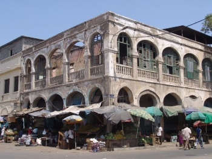

Народности
Численность населения — 920 тыс. чел. (оценка на июль 2020)[7].
Годовой прирост — 2,07 % (2020).
Суммарный коэффициент рождаемости (фертильности) — 2,19 рождений на женщину (2020).
Младенческая смертность — 41,6 на 1000 (2020).
Средняя продолжительность жизни — 62 года у мужчин, 67 лет у женщин (2020).
Заражённость вирусом иммунодефицита (ВИЧ) — 1,2 % (оценка 2018).
Грамотность населения старше 15 лет — 68 % (оценка 2003).
Городское население — 78,1 % (в 2020).
Этнический состав: исса и другие сомалийские племена — 60 %, афар — 35 %, другие (французы, арабы, итальянцы, греки) — 5 %.
Языки: официальные — французский и арабский, разговорные — сомали и афар.
Основная религия — ислам суннитского толка (94 %). Христиане составляют 6 % населения страны.

Факты
Джибу́ти и (араб. جيبوتي), официально Респу́блика Джибу́ти (جمهورية جيبوتي) — государство в Восточной Африке, в районе Африканского рога. На востоке омывается водами Аденского залива. На севере граничит с Эритреей, на западе и юге — с Эфиопией, на юго-востоке — с непризнанным Сомалилендом, территорию которого международное сообщество считает частью Сомали.Площадь территории Джибути 23 200 км²
Климат
Континентальное государство, расположено в р-не Африканского Рога и на о-вах Маскали, Муша и Семи братьев. Граничит на севере с Эритреей, на северо-западе, юго-западе и юге – с Эфиопией, на юго-востоке – с Сомали, восточное побережье омывается водами Аденского залива Индийского океана. Длина береговой линии – 350 км.